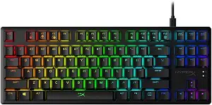

Este ordenador de sobremesa ideal está equipado con una tarjeta gráfica NVIDIA GeForce RTX 3080 GPU que proporciona una gran calidad de imagen, incluso en los juegos con gráficos más exigentes. Está equipado con Windows 11, 64 GB de memoria RAM DDR5 de 4000 MHz y hasta 2 TB de almacenamiento. El equipo cuenta además con cuatro puertos USB (3 de tipo A y 1 de tipo C), así como con entradas de audio que, para favorecer su acceso, están ubicadas en la parte alta del chasis. Para una mejor refrigeración dispone de dos ventiladores en sus extremos con reducción de ruido.
ACCESORIOS INFALTABLES
Los aficionados a los videojuegos saben bien que para tener la experiencia más completa son necesarios ciertos accesorios y dispositivos más allá de una consola o un potente ordenador. Y es que, gracias a ellos, consiguen que mejore su rendimiento y comodidad durante la partida o pueden comunicarse con otros jugadores. Recogemos algunos de los accesorios para gamers imprescindibles.
ACER PREDATOR ORION 5000
GTPLAYER
Los dos altavoces bluetooth presentes en su respaldo permiten envolver al usuario con los sonidos y música del videojuego con el que esté jugando en cada momento. Tienen hasta seis horas de autonomía. Además, el respaldo es ajustable, llegando a alcanzar los 160º de inclinación para disfrutar de una posición prácticamente horizontal. Está provista también de dos almohadas extraíbles: lumbar y cervical, ambas acolchadas y ergonómicas para controlar la correcta postura de la persona que la utiliza.
ASTRO GAMING A10 GEN 2
Gracias a su sistema de controladores dinámicos ASTRO Audio de 32 mm ajustados, estos auriculares aseguran una experiencia sonora envolvente. Para las retransmisiones en directo dispone de un micrófono de brazo que puede girar hacia arriba para silenciarse. Sus 246 gramos de peso permiten que puedan llevarse durante largos periodos de tiempo sin molestias y, además, su diadema acolchada y las almohadillas de espuma con memoria proporcionan la mayor comodidad al usuario.
TRUST GXT 992 YBAR
Este ratón gaming, diseñado especialmente para usuarios diestros, está provisto de un sensor óptico de seguimiento rápido y un ajuste personalizable entre 200 y 7.200 ppp. Sus almohadillas antideslizantes facilitan los movimientos rápidos y, para un mejor agarre, dispone de laterales texturizados que se ajustan a la mano del jugador. Totalmente programable, pueden configurarse desde los efectos de sus luces LED hasta las funciones de sus seis botones.
HYPERX ALLOY CORE RGB

Para los jugadores que busquen un teclado repleto de efectos luminosos, este dispositivo está equipado con seis efectos de iluminación y tres niveles de brillo diferentes. Sus teclas son suaves, con sensación táctil y silenciosas, además de contar con con funcionalidades Anti-ghosting (reconocer más de tres teclas a la vez) y Key rollover (reconocer una única tecla aunque se pulsen varias). Resistente a caídas y salpicaduras, puede llegar a soportar hasta un derrame de 120 ml de líquido sin deteriorarse.